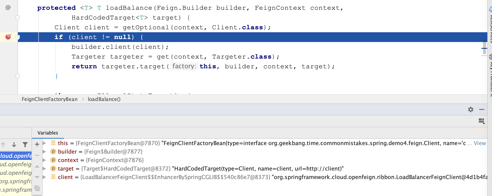
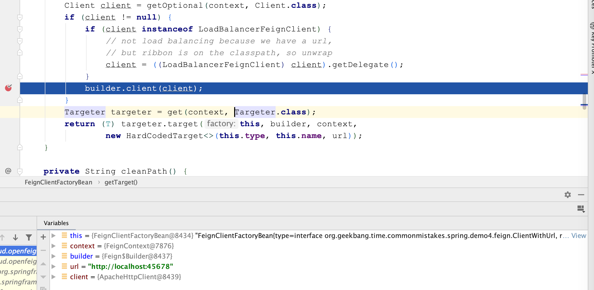
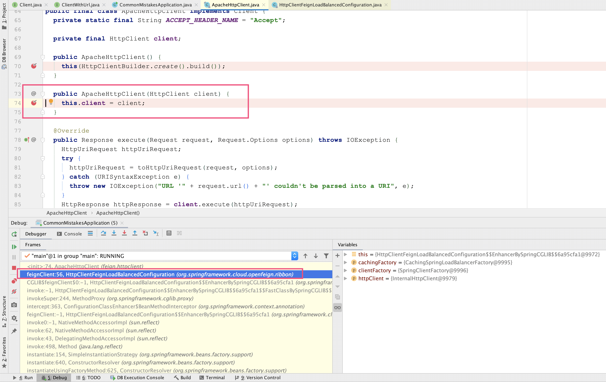
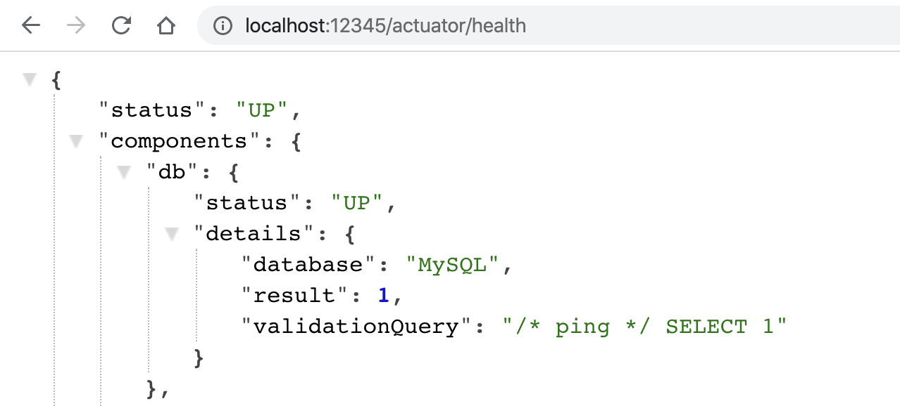
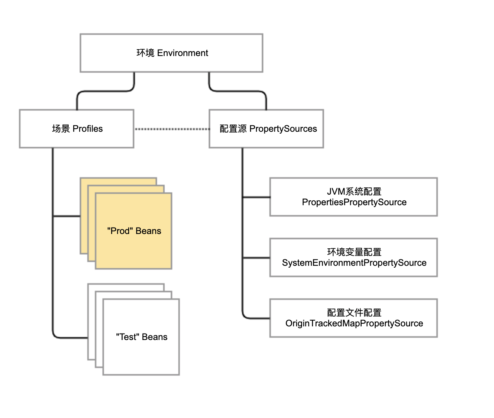
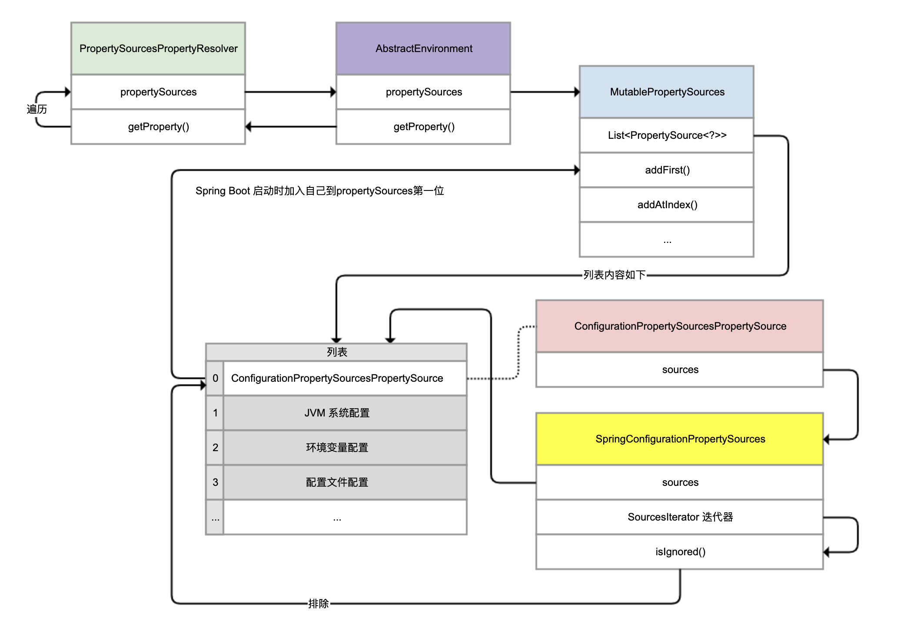
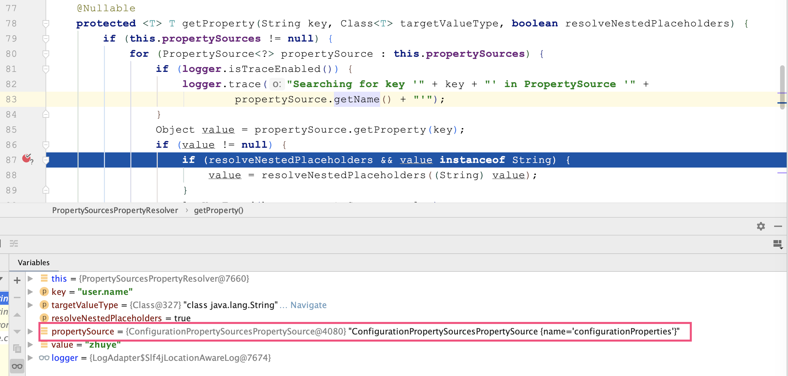
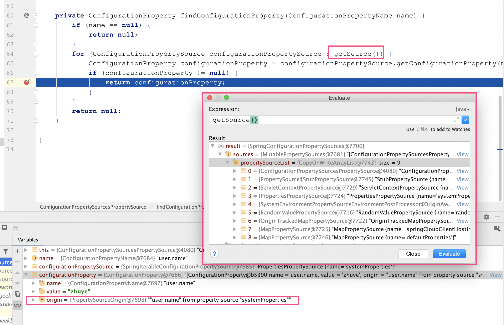
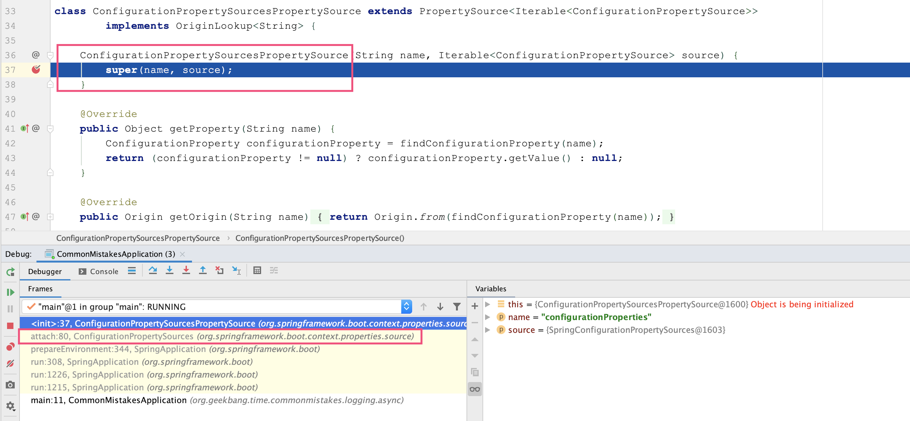

- 00 开篇词 业务代码真的会有这么多坑？.md.html
- 01 使用了并发工具类库，线程安全就高枕无忧了吗？.md.html
- 02 代码加锁：不要让“锁”事成为烦心事.md.html
- 03 线程池：业务代码最常用也最容易犯错的组件.md.html
- 04 连接池：别让连接池帮了倒忙.md.html
- 05 HTTP调用：你考虑到超时、重试、并发了吗？.md.html
- 06 2成的业务代码的Spring声明式事务，可能都没处理正确.md.html
- 07 数据库索引：索引并不是万能药.md.html
- 08 判等问题：程序里如何确定你就是你？.md.html
- 09 数值计算：注意精度、舍入和溢出问题.md.html
- 10 集合类：坑满地的List列表操作.md.html
- 11 空值处理：分不清楚的null和恼人的空指针.md.html
- 12 异常处理：别让自己在出问题的时候变为瞎子.md.html
- 13 日志：日志记录真没你想象的那么简单.md.html
- 14 文件IO：实现高效正确的文件读写并非易事.md.html
- 15 序列化：一来一回你还是原来的你吗？.md.html
- 16 用好Java 8的日期时间类，少踩一些“老三样”的坑.md.html
- 17 别以为“自动挡”就不可能出现OOM.md.html
- 18 当反射、注解和泛型遇到OOP时，会有哪些坑？.md.html
- 19 Spring框架：IoC和AOP是扩展的核心.md.html
- 20 Spring框架：框架帮我们做了很多工作也带来了复杂度.md.html
- 21 代码重复：搞定代码重复的三个绝招.md.html
- 22 接口设计：系统间对话的语言，一定要统一.md.html
- 23 缓存设计：缓存可以锦上添花也可以落井下石.md.html
- 24 业务代码写完，就意味着生产就绪了？.md.html
- 25 异步处理好用，但非常容易用错.md.html
- 26 数据存储：NoSQL与RDBMS如何取长补短、相辅相成？.md.html
- 27 数据源头：任何客户端的东西都不可信任.md.html
- 28 安全兜底：涉及钱时，必须考虑防刷、限量和防重.md.html
- 29 数据和代码：数据就是数据，代码就是代码.md.html
- 30 如何正确保存和传输敏感数据？.md.html
- 31 加餐1：带你吃透课程中Java 8的那些重要知识点（一）.md.html
- 32 加餐2：带你吃透课程中Java 8的那些重要知识点（二）.md.html
- 33 加餐3：定位应用问题，排错套路很重要.md.html
- 34 加餐4：分析定位Java问题，一定要用好这些工具（一）.md.html
- 35 加餐5：分析定位Java问题，一定要用好这些工具（二）.md.html
- 36 加餐6：这15年来，我是如何在工作中学习技术和英语的？.md.html
- 37 加餐7：程序员成长28计.md.html
- 38 加餐8：Java程序从虚拟机迁移到Kubernetes的一些坑.md.html
- 答疑篇：代码篇思考题集锦（一）.md.html
- 答疑篇：代码篇思考题集锦（三）.md.html
- 答疑篇：代码篇思考题集锦（二）.md.html
- 答疑篇：加餐篇思考题答案合集.md.html
- 答疑篇：安全篇思考题答案合集.md.html
- 答疑篇：设计篇思考题答案合集.md.html
- 结束语 写代码时，如何才能尽量避免踩坑？.md.html
20 Spring框架：框架帮我们做了很多工作也带来了复杂度
你好，我是朱晔。今天，我们聊聊 Spring 框架给业务代码带来的复杂度，以及与之相关的坑。
在上一讲，通过 AOP 实现统一的监控组件的案例，我们看到了 IoC 和 AOP 配合使用的威力：当对象由 Spring 容器管理成为 Bean 之后，我们不但可以通过容器管理配置 Bean 的属性，还可以方便地对感兴趣的方法做 AOP。
不过，前提是对象必须是 Bean。你可能会觉得这个结论很明显，也很容易理解啊。但就和上一讲提到的 Bean 默认是单例一样，理解起来简单，实践的时候却非常容易踩坑。其中原因，一方面是，理解 Spring 的体系结构和使用方式有一定曲线；另一方面是，Spring 多年发展堆积起来的内部结构非常复杂，这也是更重要的原因。
在我看来，Spring 框架内部的复杂度主要表现为三点：
第一，Spring 框架借助 IoC 和 AOP 的功能，实现了修改、拦截 Bean 的定义和实例的灵活性，因此真正执行的代码流程并不是串行的。
第二，Spring Boot 根据当前依赖情况实现了自动配置，虽然省去了手动配置的麻烦，但也因此多了一些黑盒、提升了复杂度。
第三，Spring Cloud 模块多版本也多，Spring Boot 1.x 和 2.x 的区别也很大。如果要对 Spring Cloud 或 Spring Boot 进行二次开发的话，考虑兼容性的成本会很高。
今天，我们就通过配置 AOP 切入 Spring Cloud Feign 组件失败、Spring Boot 程序的文件配置被覆盖这两个案例，感受一下 Spring 的复杂度。我希望这一讲的内容，能帮助你面对 Spring 这个复杂框架出现的问题时，可以非常自信地找到解决方案。
Feign AOP 切不到的诡异案例
我曾遇到过这么一个案例：使用 Spring Cloud 做微服务调用，为方便统一处理 Feign，想到了用 AOP 实现，即使用 within 指示器匹配 feign.Client 接口的实现进行 AOP 切入。
代码如下，通过 @Before 注解在执行方法前打印日志，并在代码中定义了一个标记了 @FeignClient 注解的 Client 类，让其成为一个 Feign 接口：
//测试Feign
@FeignClient(name = "client")
public interface Client {
@GetMapping("/feignaop/server")
String api();
}
//AOP切入feign.Client的实现
@Aspect
@Slf4j
@Component
public class WrongAspect {
@Before("within(feign.Client+)")
public void before(JoinPoint pjp) {
log.info("within(feign.Client+) pjp {}, args:{}", pjp, pjp.getArgs());
}
}
//配置扫描Feign
@Configuration
@EnableFeignClients(basePackages = "org.geekbang.time.commonmistakes.spring.demo4.feign")
public class Config {
}
通过 Feign 调用服务后可以看到日志中有输出，的确实现了 feign.Client 的切入，切入的是 execute 方法：
[15:48:32.850] [http-nio-45678-exec-1] [INFO ] [o.g.t.c.spring.demo4.WrongAspect :20 ] - within(feign.Client+) pjp execution(Response feign.Client.execute(Request,Options)), args:[GET http://client/feignaop/server HTTP/1.1
Binary data, [email protected]]
一开始这个项目使用的是客户端的负载均衡，也就是让 Ribbon 来做负载均衡，代码没啥问题。后来因为后端服务通过 Nginx 实现服务端负载均衡，所以开发同学把 @FeignClient 的配置设置了 URL 属性，直接通过一个固定 URL 调用后端服务：
@FeignClient(name = "anotherClient",url = "http://localhost:45678")
public interface ClientWithUrl {
@GetMapping("/feignaop/server")
String api();
}
但这样配置后，之前的 AOP 切面竟然失效了，也就是 within(feign.Client+) 无法切入 ClientWithUrl 的调用了。
为了还原这个场景，我写了一段代码，定义两个方法分别通过 Client 和 ClientWithUrl 这两个 Feign 进行接口调用：
@Autowired
private Client client;
@Autowired
private ClientWithUrl clientWithUrl;
@GetMapping("client")
public String client() {
return client.api();
}
@GetMapping("clientWithUrl")
public String clientWithUrl() {
return clientWithUrl.api();
}
可以看到，调用 Client 后 AOP 有日志输出，调用 ClientWithUrl 后却没有：
[15:50:32.850] [http-nio-45678-exec-1] [INFO ] [o.g.t.c.spring.demo4.WrongAspect :20 ] - within(feign.Client+) pjp execution(Response feign.Client.execute(Request,Options)), args:[GET http://client/feignaop/server HTTP/1.1
Binary data, [email protected]
这就很费解了。难道为 Feign 指定了 URL，其实现就不是 feign.Clinet 了吗？
要明白原因，我们需要分析一下 FeignClient 的创建过程，也就是分析 FeignClientFactoryBean 类的 getTarget 方法。源码第 4 行有一个 if 判断，当 URL 没有内容也就是为空或者不配置时调用 loadBalance 方法，在其内部通过 FeignContext 从容器获取 feign.Client 的实例：
<T> T getTarget() {
FeignContext context = this.applicationContext.getBean(FeignContext.class);
Feign.Builder builder = feign(context);
if (!StringUtils.hasText(this.url)) {
...
return (T) loadBalance(builder, context,
new HardCodedTarget<>(this.type, this.name, this.url));
}
...
String url = this.url + cleanPath();
Client client = getOptional(context, Client.class);
if (client != null) {
if (client instanceof LoadBalancerFeignClient) {
// not load balancing because we have a url,
// but ribbon is on the classpath, so unwrap
client = ((LoadBalancerFeignClient) client).getDelegate();
}
builder.client(client);
}
...
}
protected <T> T loadBalance(Feign.Builder builder, FeignContext context,
HardCodedTarget<T> target) {
Client client = getOptional(context, Client.class);
if (client != null) {
builder.client(client);
Targeter targeter = get(context, Targeter.class);
return targeter.target(this, builder, context, target);
}
...
}
protected <T> T getOptional(FeignContext context, Class<T> type) {
return context.getInstance(this.contextId, type);
}
调试一下可以看到，client 是 LoadBalanceFeignClient，已经是经过代理增强的，明显是一个 Bean：

所以，没有指定 URL 的 @FeignClient 对应的 LoadBalanceFeignClient，是可以通过 feign.Client 切入的。
在我们上面贴出来的源码的 16 行可以看到，当 URL 不为空的时候，client 设置为了 LoadBalanceFeignClient 的 delegate 属性。其原因注释中有提到，因为有了 URL 就不需要客户端负载均衡了，但因为 Ribbon 在 classpath 中，所以需要从 LoadBalanceFeignClient 提取出真正的 Client。断点调试下可以看到，这时 client 是一个 ApacheHttpClient：

那么，这个 ApacheHttpClient 是从哪里来的呢？这里，我教你一个小技巧：如果你希望知道一个类是怎样调用栈初始化的，可以在构造方法中设置一个断点进行调试。这样，你就可以在 IDE 的栈窗口看到整个方法调用栈，然后点击每一个栈帧看到整个过程。
用这种方式，我们可以看到，是 HttpClientFeignLoadBalancedConfiguration 类实例化的 ApacheHttpClient：

进一步查看 HttpClientFeignLoadBalancedConfiguration 的源码可以发现，LoadBalancerFeignClient 这个 Bean 在实例化的时候，new 出来一个 ApacheHttpClient 作为 delegate 放到了 LoadBalancerFeignClient 中：
@Bean
@ConditionalOnMissingBean(Client.class)
public Client feignClient(CachingSpringLoadBalancerFactory cachingFactory,
SpringClientFactory clientFactory, HttpClient httpClient) {
ApacheHttpClient delegate = new ApacheHttpClient(httpClient);
return new LoadBalancerFeignClient(delegate, cachingFactory, clientFactory);
}
public LoadBalancerFeignClient(Client delegate,
CachingSpringLoadBalancerFactory lbClientFactory,
SpringClientFactory clientFactory) {
this.delegate = delegate;
this.lbClientFactory = lbClientFactory;
this.clientFactory = clientFactory;
}
显然，ApacheHttpClient 是 new 出来的，并不是 Bean，而 LoadBalancerFeignClient 是一个 Bean。
有了这个信息，我们再来捋一下，为什么 within(feign.Client+) 无法切入设置过 URL 的 @FeignClient ClientWithUrl：
表达式声明的是切入 feign.Client 的实现类。
Spring 只能切入由自己管理的 Bean。
虽然 LoadBalancerFeignClient 和 ApacheHttpClient 都是 feign.Client 接口的实现，但是 HttpClientFeignLoadBalancedConfiguration 的自动配置只是把前者定义为 Bean，后者是 new 出来的、作为了 LoadBalancerFeignClient 的 delegate，不是 Bean。
在定义了 FeignClient 的 URL 属性后，我们获取的是 LoadBalancerFeignClient 的 delegate，它不是 Bean。
因此，定义了 URL 的 FeignClient 采用 within(feign.Client+) 无法切入。
那，如何解决这个问题呢？有一位同学提出，修改一下切点表达式，通过 @FeignClient 注解来切：
@Before("@within(org.springframework.cloud.openfeign.FeignClient)")
public void before(JoinPoint pjp){
log.info("@within(org.springframework.cloud.openfeign.FeignClient) pjp {}, args:{}", pjp, pjp.getArgs());
}
修改后通过日志看到，AOP 的确切成功了：
[15:53:39.093] [http-nio-45678-exec-3] [INFO ] [o.g.t.c.spring.demo4.Wrong2Aspect :17 ] - @within(org.springframework.cloud.openfeign.FeignClient) pjp execution(String org.geekbang.time.commonmistakes.spring.demo4.feign.ClientWithUrl.api()), args:[]
但仔细一看就会发现，这次切入的是 ClientWithUrl 接口的 API 方法，并不是 client.Feign 接口的 execute 方法，显然不符合预期。
这位同学犯的错误是，没有弄清楚真正希望切的是什么对象。@FeignClient 注解标记在 Feign Client 接口上，所以切的是 Feign 定义的接口，也就是每一个实际的 API 接口。而通过 feign.Client 接口切的是客户端实现类，切到的是通用的、执行所有 Feign 调用的 execute 方法。
那么问题来了，ApacheHttpClient 不是 Bean 无法切入，切 Feign 接口本身又不符合要求。怎么办呢？
经过一番研究发现，ApacheHttpClient 其实有机会独立成为 Bean。查看 HttpClientFeignConfiguration 的源码可以发现，当没有 ILoadBalancer 类型的时候，自动装配会把 ApacheHttpClient 设置为 Bean。
这么做的原因很明确，如果我们不希望做客户端负载均衡的话，应该不会引用 Ribbon 组件的依赖，自然没有 LoadBalancerFeignClient，只有 ApacheHttpClient：
@Configuration
@ConditionalOnClass(ApacheHttpClient.class)
@ConditionalOnMissingClass("com.netflix.loadbalancer.ILoadBalancer")
@ConditionalOnMissingBean(CloseableHttpClient.class)
@ConditionalOnProperty(value = "feign.httpclient.enabled", matchIfMissing = true)
protected static class HttpClientFeignConfiguration {
@Bean
@ConditionalOnMissingBean(Client.class)
public Client feignClient(HttpClient httpClient) {
return new ApacheHttpClient(httpClient);
}
}
那，把 pom.xml 中的 ribbon 模块注释之后，是不是可以解决问题呢？
<dependency>
<groupId>org.springframework.cloud</groupId>
<artifactId>spring-cloud-starter-netflix-ribbon</artifactId>
</dependency>
但，问题并没解决，启动出错误了：
Caused by: java.lang.IllegalArgumentException: Cannot subclass final class feign.httpclient.ApacheHttpClient
at org.springframework.cglib.proxy.Enhancer.generateClass(Enhancer.java:657)
at org.springframework.cglib.core.DefaultGeneratorStrategy.generate(DefaultGeneratorStrategy.java:25)
这里，又涉及了 Spring 实现动态代理的两种方式：
JDK 动态代理，通过反射实现，只支持对实现接口的类进行代理；
CGLIB 动态字节码注入方式，通过继承实现代理，没有这个限制。
Spring Boot 2.x 默认使用 CGLIB 的方式，但通过继承实现代理有个问题是，无法继承 final 的类。因为，ApacheHttpClient 类就是定义为了 final：
public final class ApacheHttpClient implements Client {
为解决这个问题，我们把配置参数 proxy-target-class 的值修改为 false，以切换到使用 JDK 动态代理的方式：
spring.aop.proxy-target-class=false
修改后执行 clientWithUrl 接口可以看到，通过 within(feign.Client+) 方式可以切入 feign.Client 子类了。以下日志显示了 @within 和 within 的两次切入：
[16:29:55.303] [http-nio-45678-exec-1] [INFO ] [o.g.t.c.spring.demo4.Wrong2Aspect :16 ] - @within(org.springframework.cloud.openfeign.FeignClient) pjp execution(String org.geekbang.time.commonmistakes.spring.demo4.feign.ClientWithUrl.api()), args:[]
[16:29:55.310] [http-nio-45678-exec-1] [INFO ] [o.g.t.c.spring.demo4.WrongAspect :15 ] - within(feign.Client+) pjp execution(Response feign.Client.execute(Request,Options)), args:[GET http://localhost:45678/feignaop/server HTTP/1.1
Binary data, [email protected]]
这下我们就明白了，Spring Cloud 使用了自动装配来根据依赖装配组件，组件是否成为 Bean 决定了 AOP 是否可以切入，在尝试通过 AOP 切入 Spring Bean 的时候要注意。
加上上一讲的两个案例，我就把 IoC 和 AOP 相关的坑点和你说清楚了。除此之外，我们在业务开发时，还有一个绕不开的点是，Spring 程序的配置问题。接下来，我们就具体看看吧。
Spring 程序配置的优先级问题
我们知道，通过配置文件 application.properties，可以实现 Spring Boot 应用程序的参数配置。但我们可能不知道的是，Spring 程序配置是有优先级的，即当两个不同的配置源包含相同的配置项时，其中一个配置项很可能会被覆盖掉。这，也是为什么我们会遇到些看似诡异的配置失效问题。
我们来通过一个实际案例，研究下配置源以及配置源的优先级问题。
对于 Spring Boot 应用程序，一般我们会通过设置 management.server.port 参数，来暴露独立的 actuator 管理端口。这样做更安全，也更方便监控系统统一监控程序是否健康。
management.server.port=45679
有一天程序重新发布后，监控系统显示程序离线。但排查下来发现，程序是正常工作的，只是 actuator 管理端口的端口号被改了，不是配置文件中定义的 45679 了。
后来发现，运维同学在服务器上定义了两个环境变量 MANAGEMENT_SERVER_IP 和 MANAGEMENT_SERVER_PORT，目的是方便监控 Agent 把监控数据上报到统一的管理服务上：
MANAGEMENT_SERVER_IP=192.168.0.2
MANAGEMENT_SERVER_PORT=12345
问题就是出在这里。MANAGEMENT_SERVER_PORT 覆盖了配置文件中的 management.server.port，修改了应用程序本身的端口。当然，监控系统也就无法通过老的管理端口访问到应用的 health 端口了。如下图所示，actuator 的端口号变成了 12345：

到这里坑还没完，为了方便用户登录，需要在页面上显示默认的管理员用户名，于是开发同学在配置文件中定义了一个 user.name 属性，并设置为 defaultadminname：
user.name=defaultadminname
后来发现，程序读取出来的用户名根本就不是配置文件中定义的。这，又是咋回事？
带着这个问题，以及之前环境变量覆盖配置文件配置的问题，我们写段代码看看，从 Spring 中到底能读取到几个 management.server.port 和 user.name 配置项。
要想查询 Spring 中所有的配置，我们需要以环境 Environment 接口为入口。接下来，我就与你说说 Spring 通过环境 Environment 抽象出的 Property 和 Profile：
针对 Property，又抽象出各种 PropertySource 类代表配置源。一个环境下可能有多个配置源，每个配置源中有诸多配置项。在查询配置信息时，需要按照配置源优先级进行查询。
Profile 定义了场景的概念。通常，我们会定义类似 dev、test、stage 和 prod 等环境作为不同的 Profile，用于按照场景对 Bean 进行逻辑归属。同时，Profile 和配置文件也有关系，每个环境都有独立的配置文件，但我们只会激活某一个环境来生效特定环境的配置文件。

接下来，我们重点看看 Property 的查询过程。
对于非 Web 应用，Spring 对于 Environment 接口的实现是 StandardEnvironment 类。我们通过 Spring 注入 StandardEnvironment 后循环 getPropertySources 获得的 PropertySource，来查询所有的 PropertySource 中 key 是 user.name 或 management.server.port 的属性值；然后遍历 getPropertySources 方法，获得所有配置源并打印出来：
@Autowired
private StandardEnvironment env;
@PostConstruct
public void init(){
Arrays.asList("user.name", "management.server.port").forEach(key -> {
env.getPropertySources().forEach(propertySource -> {
if (propertySource.containsProperty(key)) {
log.info("{} -> {} 实际取值：{}", propertySource, propertySource.getProperty(key), env.getProperty(key));
}
});
});
System.out.println("配置优先级：");
env.getPropertySources().stream().forEach(System.out::println);
}
我们研究下输出的日志：
2020-01-15 16:08:34.054 INFO 40123 --- [ main] o.g.t.c.s.d.CommonMistakesApplication : ConfigurationPropertySourcesPropertySource {name='configurationProperties'} -> zhuye 实际取值：zhuye
2020-01-15 16:08:34.054 INFO 40123 --- [ main] o.g.t.c.s.d.CommonMistakesApplication : PropertiesPropertySource {name='systemProperties'} -> zhuye 实际取值：zhuye
2020-01-15 16:08:34.054 INFO 40123 --- [ main] o.g.t.c.s.d.CommonMistakesApplication : OriginTrackedMapPropertySource {name='applicationConfig: [classpath:/application.properties]'} -> defaultadminname 实际取值：zhuye
2020-01-15 16:08:34.054 INFO 40123 --- [ main] o.g.t.c.s.d.CommonMistakesApplication : ConfigurationPropertySourcesPropertySource {name='configurationProperties'} -> 12345 实际取值：12345
2020-01-15 16:08:34.054 INFO 40123 --- [ main] o.g.t.c.s.d.CommonMistakesApplication : OriginAwareSystemEnvironmentPropertySource {name=''} -> 12345 实际取值：12345
2020-01-15 16:08:34.054 INFO 40123 --- [ main] o.g.t.c.s.d.CommonMistakesApplication : OriginTrackedMapPropertySource {name='applicationConfig: [classpath:/application.properties]'} -> 45679 实际取值：12345
配置优先级：
ConfigurationPropertySourcesPropertySource {name='configurationProperties'}
StubPropertySource {name='servletConfigInitParams'}
ServletContextPropertySource {name='servletContextInitParams'}
PropertiesPropertySource {name='systemProperties'}
OriginAwareSystemEnvironmentPropertySource {name='systemEnvironment'}
RandomValuePropertySource {name='random'}
OriginTrackedMapPropertySource {name='applicationConfig: [classpath:/application.properties]'}
MapPropertySource {name='springCloudClientHostInfo'}
MapPropertySource {name='defaultProperties'}
有三处定义了 user.name：第一个是 configurationProperties，值是 zhuye；第二个是 systemProperties，代表系统配置，值是 zhuye；第三个是 applicationConfig，也就是我们的配置文件，值是配置文件中定义的 defaultadminname。
同样地，也有三处定义了 management.server.port：第一个是 configurationProperties，值是 12345；第二个是 systemEnvironment 代表系统环境，值是 12345；第三个是 applicationConfig，也就是我们的配置文件，值是配置文件中定义的 45679。
第 7 到 16 行的输出显示，Spring 中有 9 个配置源，值得关注是 ConfigurationPropertySourcesPropertySource、PropertiesPropertySource、OriginAwareSystemEnvironmentPropertySource 和我们的配置文件。
那么，Spring 真的是按这个顺序查询配置吗？最前面的 configurationProperties，又是什么？为了回答这 2 个问题，我们需要分析下源码。我先说明下，下面源码分析的逻辑有些复杂，你可以结合着下面的整体流程图来理解：

Demo 中注入的 StandardEnvironment，继承的是 AbstractEnvironment（图中紫色类）。AbstractEnvironment 的源码如下：
public abstract class AbstractEnvironment implements ConfigurableEnvironment {
private final MutablePropertySources propertySources = new MutablePropertySources();
private final ConfigurablePropertyResolver propertyResolver =
new PropertySourcesPropertyResolver(this.propertySources);
public String getProperty(String key) {
return this.propertyResolver.getProperty(key);
}
}
可以看到：
MutablePropertySources 类型的字段 propertySources，看起来代表了所有配置源；
getProperty 方法，通过 PropertySourcesPropertyResolver 类进行查询配置；
实例化 PropertySourcesPropertyResolver 的时候，传入了当前的 MutablePropertySources。
接下来，我们继续分析 MutablePropertySources 和 PropertySourcesPropertyResolver。先看看 MutablePropertySources 的源码（图中蓝色类）：
public class MutablePropertySources implements PropertySources {
private final List<PropertySource<?>> propertySourceList = new CopyOnWriteArrayList<>();
public void addFirst(PropertySource<?> propertySource) {
removeIfPresent(propertySource);
this.propertySourceList.add(0, propertySource);
}
public void addLast(PropertySource<?> propertySource) {
removeIfPresent(propertySource);
this.propertySourceList.add(propertySource);
}
public void addBefore(String relativePropertySourceName, PropertySource<?> propertySource) {
...
int index = assertPresentAndGetIndex(relativePropertySourceName);
addAtIndex(index, propertySource);
}
public void addAfter(String relativePropertySourceName, PropertySource<?> propertySource) {
...
int index = assertPresentAndGetIndex(relativePropertySourceName);
addAtIndex(index + 1, propertySource);
}
private void addAtIndex(int index, PropertySource<?> propertySource) {
removeIfPresent(propertySource);
this.propertySourceList.add(index, propertySource);
}
}
可以发现：
propertySourceList 字段用来真正保存 PropertySource 的 List，且这个 List 是一个 CopyOnWriteArrayList。
类中定义了 addFirst、addLast、addBefore、addAfter 等方法，来精确控制 PropertySource 加入 propertySourceList 的顺序。这也说明了顺序的重要性。
继续看下 PropertySourcesPropertyResolver（图中绿色类）的源码，找到真正查询配置的方法 getProperty。
这里，我们重点看一下第 9 行代码：遍历的 propertySources 是 PropertySourcesPropertyResolver 构造方法传入的，再结合 AbstractEnvironment 的源码可以发现，这个 propertySources 正是 AbstractEnvironment 中的 MutablePropertySources 对象。遍历时，如果发现配置源中有对应的 Key 值，则使用这个值。因此，MutablePropertySources 中配置源的次序尤为重要。
public class PropertySourcesPropertyResolver extends AbstractPropertyResolver {
private final PropertySources propertySources;
public PropertySourcesPropertyResolver(@Nullable PropertySources propertySources) {
this.propertySources = propertySources;
}
protected <T> T getProperty(String key, Class<T> targetValueType, boolean resolveNestedPlaceholders) {
if (this.propertySources != null) {
for (PropertySource<?> propertySource : this.propertySources) {
if (logger.isTraceEnabled()) {
logger.trace("Searching for key '" + key + "' in PropertySource '" +
propertySource.getName() + "'");
}
Object value = propertySource.getProperty(key);
if (value != null) {
if (resolveNestedPlaceholders && value instanceof String) {
value = resolveNestedPlaceholders((String) value);
}
logKeyFound(key, propertySource, value);
return convertValueIfNecessary(value, targetValueType);
}
}
}
...
}
}
回到之前的问题，在查询所有配置源的时候，我们注意到处在第一位的是 ConfigurationPropertySourcesPropertySource，这是什么呢？
其实，它不是一个实际存在的配置源，扮演的是一个代理的角色。但通过调试你会发现，我们获取的值竟然是由它提供并且返回的，且没有循环遍历后面的 PropertySource：

继续查看 ConfigurationPropertySourcesPropertySource（图中红色类）的源码可以发现，getProperty 方法其实是通过 findConfigurationProperty 方法查询配置的。如第 25 行代码所示，这其实还是在遍历所有的配置源：
class ConfigurationPropertySourcesPropertySource extends PropertySource<Iterable<ConfigurationPropertySource>>
implements OriginLookup<String> {
ConfigurationPropertySourcesPropertySource(String name, Iterable<ConfigurationPropertySource> source) {
super(name, source);
}
@Override
public Object getProperty(String name) {
ConfigurationProperty configurationProperty = findConfigurationProperty(name);
return (configurationProperty != null) ? configurationProperty.getValue() : null;
}
private ConfigurationProperty findConfigurationProperty(String name) {
try {
return findConfigurationProperty(ConfigurationPropertyName.of(name, true));
}
catch (Exception ex) {
return null;
}
}
private ConfigurationProperty findConfigurationProperty(ConfigurationPropertyName name) {
if (name == null) {
return null;
}
for (ConfigurationPropertySource configurationPropertySource : getSource()) {
ConfigurationProperty configurationProperty = configurationPropertySource.getConfigurationProperty(name);
if (configurationProperty != null) {
return configurationProperty;
}
}
return null;
}
}
调试可以发现，这个循环遍历（getSource() 的结果）的配置源，其实是 SpringConfigurationPropertySources（图中黄色类），其中包含的配置源列表就是之前看到的 9 个配置源，而第一个就是 ConfigurationPropertySourcesPropertySource。看到这里，我们的第一感觉是会不会产生死循环，它在遍历的时候怎么排除自己呢？
同时观察 configurationProperty 可以看到，这个 ConfigurationProperty 其实类似代理的角色，实际配置是从系统属性中获得的：

继续查看 SpringConfigurationPropertySources 可以发现，它返回的迭代器是内部类 SourcesIterator，在 fetchNext 方法获取下一个项时，通过 isIgnored 方法排除了 ConfigurationPropertySourcesPropertySource（源码第 38 行）：
class SpringConfigurationPropertySources implements Iterable<ConfigurationPropertySource> {
private final Iterable<PropertySource<?>> sources;
private final Map<PropertySource<?>, ConfigurationPropertySource> cache = new ConcurrentReferenceHashMap<>(16,
ReferenceType.SOFT);
SpringConfigurationPropertySources(Iterable<PropertySource<?>> sources) {
Assert.notNull(sources, "Sources must not be null");
this.sources = sources;
}
@Override
public Iterator<ConfigurationPropertySource> iterator() {
return new SourcesIterator(this.sources.iterator(), this::adapt);
}
private static class SourcesIterator implements Iterator<ConfigurationPropertySource> {
@Override
public boolean hasNext() {
return fetchNext() != null;
}
private ConfigurationPropertySource fetchNext() {
if (this.next == null) {
if (this.iterators.isEmpty()) {
return null;
}
if (!this.iterators.peek().hasNext()) {
this.iterators.pop();
return fetchNext();
}
PropertySource<?> candidate = this.iterators.peek().next();
if (candidate.getSource() instanceof ConfigurableEnvironment) {
push((ConfigurableEnvironment) candidate.getSource());
return fetchNext();
}
if (isIgnored(candidate)) {
return fetchNext();
}
this.next = this.adapter.apply(candidate);
}
return this.next;
}
private void push(ConfigurableEnvironment environment) {
this.iterators.push(environment.getPropertySources().iterator());
}
private boolean isIgnored(PropertySource<?> candidate) {
return (candidate instanceof StubPropertySource
|| candidate instanceof ConfigurationPropertySourcesPropertySource);
}
}
}
我们已经了解了 ConfigurationPropertySourcesPropertySource 是所有配置源中的第一个，实现了对 PropertySourcesPropertyResolver 中遍历逻辑的“劫持”，并且知道了其遍历逻辑。最后一个问题是，它如何让自己成为第一个配置源呢？
再次运用之前我们学到的那个小技巧，来查看实例化 ConfigurationPropertySourcesPropertySource 的地方：

可以看到，ConfigurationPropertySourcesPropertySource 类是由 ConfigurationPropertySources 的 attach 方法实例化的。查阅源码可以发现，这个方法的确从环境中获得了原始的 MutablePropertySources，把自己加入成为一个元素：
public final class ConfigurationPropertySources {
public static void attach(Environment environment) {
MutablePropertySources sources = ((ConfigurableEnvironment) environment).getPropertySources();
PropertySource<?> attached = sources.get(ATTACHED_PROPERTY_SOURCE_NAME);
if (attached == null) {
sources.addFirst(new ConfigurationPropertySourcesPropertySource(ATTACHED_PROPERTY_SOURCE_NAME,
new SpringConfigurationPropertySources(sources)));
}
}
}
而这个 attach 方法，是 Spring 应用程序启动时准备环境的时候调用的。在 SpringApplication 的 run 方法中调用了 prepareEnvironment 方法，然后又调用了 ConfigurationPropertySources.attach 方法：
public class SpringApplication {
public ConfigurableApplicationContext run(String... args) {
...
try {
ApplicationArguments applicationArguments = new DefaultApplicationArguments(args);
ConfigurableEnvironment environment = prepareEnvironment(listeners, applicationArguments);
...
}
private ConfigurableEnvironment prepareEnvironment(SpringApplicationRunListeners listeners,
ApplicationArguments applicationArguments) {
...
ConfigurationPropertySources.attach(environment);
...
}
}
看到这里你是否彻底理清楚 Spring 劫持 PropertySourcesPropertyResolver 的实现方式，以及配置源有优先级的原因了呢？如果你想知道 Spring 各种预定义的配置源的优先级，可以参考官方文档。
重点回顾
今天，我用两个业务开发中的实际案例，带你进一步学习了 Spring 的 AOP 和配置优先级这两大知识点。现在，你应该也感受到 Spring 实现的复杂度了。
对于 AOP 切 Feign 的案例，我们在实现功能时走了一些弯路。Spring Cloud 会使用 Spring Boot 的特性，根据当前引入包的情况做各种自动装配。如果我们要扩展 Spring 的组件，那么只有清晰了解 Spring 自动装配的运作方式，才能鉴别运行时对象在 Spring 容器中的情况，不能想当然认为代码中能看到的所有 Spring 的类都是 Bean。
对于配置优先级的案例，分析配置源优先级时，如果我们以为看到 PropertySourcesPropertyResolver 就看到了真相，后续进行扩展开发时就可能会踩坑。我们一定要注意，分析 Spring 源码时，你看到的表象不一定是实际运行时的情况，还需要借助日志或调试工具来理清整个过程。如果没有调试工具，你可以借助第 11 讲用到的 Arthas，来分析代码调用路径。
今天用到的代码，我都放在了 GitHub 上，你可以点击这个链接查看。
思考与讨论
除了我们这两讲用到 execution、within、@within、@annotation 四个指示器外，Spring AOP 还支持 this、target、args、@target、@args。你能说说后面五种指示器的作用吗？
Spring 的 Environment 中的 PropertySources 属性可以包含多个 PropertySource，越往前优先级越高。那，我们能否利用这个特点实现配置文件中属性值的自动赋值呢？比如，我们可以定义 %%MYSQL.URL%%、%%MYSQL.USERNAME%% 和 %%MYSQL.PASSWORD%%，分别代表数据库连接字符串、用户名和密码。在配置数据源时，我们只要设置其值为占位符，框架就可以自动根据当前应用程序名 application.name，统一把占位符替换为真实的数据库信息。这样，生产的数据库信息就不需要放在配置文件中了，会更安全。
关于 Spring Core、Spring Boot 和 Spring Cloud，你还遇到过其他坑吗？我是朱晔，欢迎在评论区与我留言分享你的想法，也欢迎你把今天的内容分享给你的朋友或同事，一起交流。